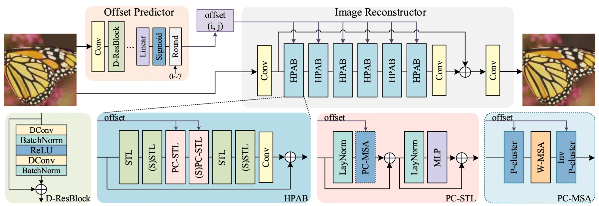
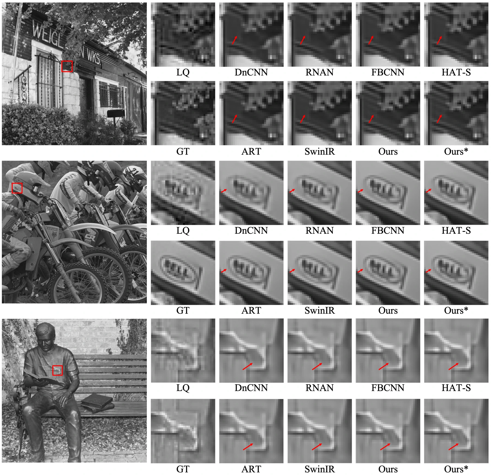

Images shared and edited repeatedly may undergo two JPEG compressions with different block alignments. A model trained for single compression can struggle with the resulting artifacts. The paper’s analysis identifies up to four patterns within an 8-by-8 block.
反复分享和编辑的图像可能经历两次块对齐方式不同的 JPEG 压缩。针对单次压缩训练的模型往往难以处理其伪影。论文分析指出，一个 8×8 块内最多可能出现四种图案。
The offset between compression grids is therefore a useful clue. Estimating it changes which image regions the model should treat as having a shared artifact pattern.
两次压缩网格之间的偏移因此成为有效线索；估计偏移可以帮助模型判断哪些区域具有相似伪影模式。
Recovering the relationship between JPEG grids恢复 JPEG 网格之间的关系
OAPT first predicts the offset between the two compression grids. These estimates guide the grouping of similar patterns. Its reconstruction network combines window-based self-attention with sparse attention over the grouped features through hybrid partition attention blocks.
OAPT 首先预测两次压缩网格间的像素偏移，再据此聚合相似图案。重建网络利用混合分区注意力块，将窗口自注意力与面向聚类特征的稀疏注意力结合。
When an image is cropped between JPEG encodings, the second block grid no longer lines up with the first. Neighboring pixels can therefore belong to different compression histories even within one local window. Predicting the offset allows the network to group pixels according to that history. Window attention captures local relationships, while the pattern-based sparse attention connects positions that share the same artifact structure.
图像在两次 JPEG 编码之间被裁剪时，两套块网格就不再对齐，即使在同一个局部窗口内，相邻像素也可能具有不同压缩历史。偏移预测使网络能够按历史分组；窗口注意力捕捉局部关系，基于模式的稀疏注意力则连接共享同类伪影结构的位置。


Testing aligned and shifted compression检验对齐与错位压缩
Training synthesizes aligned and misaligned double compression by applying JPEG, a pixel shift and JPEG again. Both quality factors are sampled from 5 to 95, with offsets from zero to seven pixels. A single model covers these conditions. Grayscale and color benchmarks, visual examples and partition-module ablations then test whether offset estimation improves grouping and whether the grouping transfers to other restoration transformers.
训练通过 JPEG 压缩、像素偏移、再次 JPEG 压缩，合成对齐和不对齐的双重压缩样本。两个质量因子在 5–95 范围内采样，偏移为 0–7 像素，并用一个模型覆盖这些情况。灰度和彩色基准、可视化与分组模块消融共同检验偏移估计的作用及模块的可迁移性。
What offset-aware attention recovers偏移感知注意力恢复了什么
The paper reports an improvement of more than 0.16 dB over the compared state-of-the-art method for double-JPEG restoration. The pattern-clustering component can also be inserted into other transformer restoration models without extra computation, according to the reported study. This connects restoration architecture to the structure of the degradation process itself.
论文在双重 JPEG 恢复任务上报告了超过 0.16 dB 的性能提升。图案聚类模块还可以作为插件集成到其他 Transformer 恢复方法中，且不增加计算量。该工作将网络结构与退化过程本身的规律联系起来。


Compression history is part of the input压缩历史也是输入信息
The important step is to expose the structure of the degradation to the attention mechanism. Pixels that look unrelated spatially can share a compression pattern, and grouping them accordingly changes what the model can learn. The method is tailored to double JPEG; repeated resizing, other codecs or a more complex editing history introduce degradations beyond that specific model.
关键在于让注意力机制看到退化本身的结构。空间位置不同的像素可能共享同一种压缩模式，按模式组织它们会改变模型能够学习的信息。该方法针对双重 JPEG；多次缩放、其他编码器或更复杂编辑历史，仍可能超出其具体退化模型。
Paper & authors
OAPT: Offset-Aware Partition Transformer for Double JPEG Artifacts Removal
ECCV 2024
Cite this work
@misc{mo2024oaptoffsetawarepartitiontransformer,
title = {OAPT: Offset-Aware Partition Transformer for Double JPEG Artifacts Removal},
author = {Qiao Mo
and Yukang Ding
and Jinhua Hao
and Qiang Zhu
and Ming Sun
and Chao Zhou
and Feiyu Chen
and Shuyuan Zhu},
year = {2024},
eprint = {2408.11480},
archivePrefix = {arXiv},
primaryClass = {eess.IV},
url = {https://arxiv.org/abs/2408.11480}
}